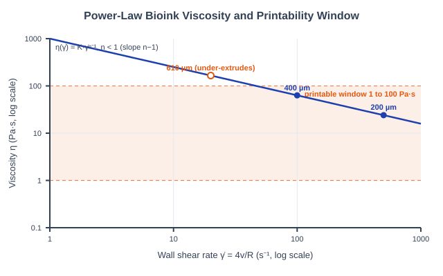
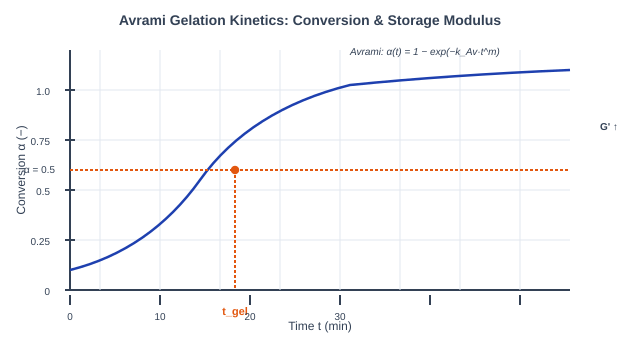
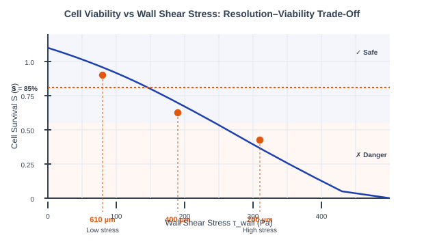
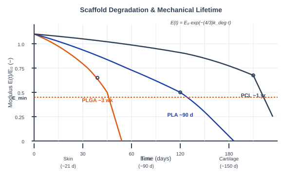
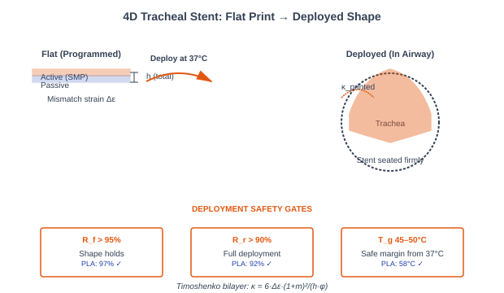

4D Bioprinting: Printability, Gelation Kinetics, Cell Survival, Scaffold Lifetime & the Self-Deploying Tracheal Stent
Theory: 4D Bioprinting
1. Introduction to 4D Bioprinting
Bioprinting is the additive deposition of living cells suspended in a hydrogel "bioink" to build tissue-like constructs layer by layer. It becomes 4D bioprinting when the printed object is designed to change shape or function over time — a flat sheet that curls into a tube, a scaffold that dissolves on a schedule, a construct that matures as its cells remodel it. The extra dimension is time, and getting there means clearing five very different hurdles in sequence: the ink has to extrude, it has to set, the cells have to live, the scaffold has to last exactly long enough, and — in the capstone — the whole thing has to fold itself into a working device. Each sub-calculator below is one of those hurdles.
2. The Extrusion Bioprinting Chain
Extrusion bioprinting pushes bioink through a fine nozzle under pressure. Four physics problems are coupled at the nozzle tip and they pull against each other:
- Rheology sets whether the ink flows cleanly (Sub-Calc A).
- Gelation kinetics sets whether the deposited layer holds before the next lands (Sub-Calc B).
- Shear stress in the nozzle sets how many cells survive the trip (Sub-Calc C).
- Degradation sets how long the finished scaffold bears load (Sub-Calc D).
The tension is real: a narrow nozzle prints fine features but raises shear and kills cells; a fast-gelling ink resists slumping but can clog. The capstone (Sub-Calc E) shows what these constraints buy you — a device that deploys itself.
3. Bioink Viscosity & the Printability Window (Sub-Calc A)
A good bioink is shear-thinning: thick at rest so a printed road holds its shape, thin under the nozzle so it extrudes without crushing the cells inside. The viscosity follows the power-law (Ostwald–de Waele) model:
Where:
- K is the consistency index (Pa·sⁿ) — the overall thickness.
- n is the flow index. For n < 1 the ink is shear-thinning; on a log–log plot η vs γ̇ is a straight line of slope (n−1).
- The wall shear rate at the nozzle, for a Newtonian reference, is γ̇ = 4Q/(πR³) = 4v/R, so a narrower tip or faster print drives γ̇ up.
Printability is a window, not a point: the ink is judged printable when its wall viscosity satisfies 1 Pa·s ≤ η(γ̇print) ≤ 100 Pa·s. Below 1 it spreads into a puddle; above 100 it under-extrudes and tears. After extrusion the ink rebuilds its structure (thixotropy) as η(t) = η0(1 − e−t/τ), reaching 90% recovery at t90 = τ·ln(10).

Figure 1: The shear-thinning power law is a straight line of slope n−1 on log–log axes; each nozzle sits at its own wall shear rate, and only those landing inside the 1–100 Pa·s band print cleanly (Sub-Calc A).
4. Thermal Gelation Kinetics (Sub-Calc B)
A freshly printed layer is still liquid — it must gel fast enough to carry the next layer before it slumps. Isothermal gelation is modeled with Avrami kinetics, borrowed from crystallization theory:
Here α is the fraction converted from sol to gel, m is the Avrami exponent (nucleation/growth dimensionality, 1–4), and kAv is the rate constant. The gel point is taken at α = ½, which inverts to a closed form:
The storage modulus tracks conversion directly, G′(t) = G′∞ · α(t), building sigmoidally toward the plateau G′∞. The rate constant carries the temperature dependence through an Arrhenius law, kAv(T) = kAv(Tref)·exp[−(Ea/R)(1/T − 1/Tref)], with Ea ≈ 62 kJ/mol and the model anchored to collagen so that tgel(37 °C) ≈ 18 min at m = 2.

Figure 2: Gel conversion rises sigmoidally; the gel point (α = ½) fixes tgel, and the storage modulus G′ climbs on the same curve toward its plateau G′∞ (Sub-Calc B).
5. Cell Viability Through Print Shear (Sub-Calc C)
Extrusion forces living cells through the nozzle, where the fluid drags on the wall. The wall shear stress is the viscosity times the wall shear rate:
It climbs steeply as the nozzle narrows (R in the denominator). Cell survival falls off as a first-order shear-kill process over the residence time the cells spend in the nozzle:
kkill ≈ 0.01 Pa⁻¹s⁻¹ lumps the cell type and shear mode into one screening coefficient; the target is survival S > 85%. This is the resolution–viability trade-off unique to bioprinting: the 200 µm tip prints the finest features but drives τwall highest, while the 610 µm tip is gentle but coarse. The model is a ±20% screen — a real build must still be confirmed with LIVE/DEAD staining.

Figure 3: Survival decays exponentially with wall shear stress; the fine 200 µm nozzle sits deepest in the danger zone while the coarse 610 µm tip stays above the 85% target — the resolution–viability trade-off (Sub-Calc C).
6. Scaffold Degradation & Mechanical Lifetime (Sub-Calc D)
A tissue scaffold is meant to disappear: too fast and it fails before the tissue can carry load, too slow and it blocks regeneration. Hydrolysis of the ester backbone removes mass as a first-order decay:
Stiffness, though, falls faster than mass. A porous strut network follows the Gibson–Ashby style scaling E ∝ M4/3, so:
Halving the remaining mass cuts modulus by 24/3 = 2.52×. Mechanical failure is the moment stiffness drops through the tissue's load-bearing floor Emin:
The three model polymers span three timescales: PLGA (kdeg = 0.02/day, weeks), PLA (0.002/day, months), and PCL (0.0005/day, years). Note E0 here is the porous scaffold modulus (MPa-scale), not the bulk polymer (GPa). Matching tfail to a tissue's regeneration time (skin ~21 d, bone ~90 d, cartilage ~150 d) is the design goal.

Figure 4: Because E ∝ M4/3, stiffness decays faster than mass; PLGA, PLA and PCL cross the Emin load-bearing floor at weeks, months and years respectively (Sub-Calc D).
7. The 4D Self-Deploying Tracheal Stent (Sub-Calc E)
The capstone folds a flat-printed bilayer into a tracheal stent at body temperature, integrating the shape-memory polymer of Experiment 1 with the Timoshenko bilayer of Experiment 2. The target curvature is set by the airway, and the print deliberately over-curves by 20% so the relaxed device seats firmly:
An active layer that wants to contract by a mismatch strain Δε against a passive layer bends the stack. The Timoshenko bimetal curvature for layer thickness ratio m = h1/h2 and modulus ratio n = E1/E2 is:
Setting κ = κprinted and solving for the total thickness back-calculates the bilayer you must print:
Geometry alone is not enough — the SMP must clear three deployment safety gates: shape fixity Rf > 95%, shape recovery Rr > 90%, and a glass transition Tg = 45–50 °C. That Tg window is the subtle one: a PCL-SMP at Tg = 35 °C is only 2 °C below body temperature, so the stent could deploy prematurely during room-temperature handling. The PLA-SMP (Tg 58 °C, Rf 97%, Rr 92%) clears every gate.

Figure 5: A flat bilayer programmed with mismatch strain Δε curls to κprinted = 1.2κtarget and seats inside the airway, provided the SMP passes the Rf, Rr and Tg deployment gates (Sub-Calc E).